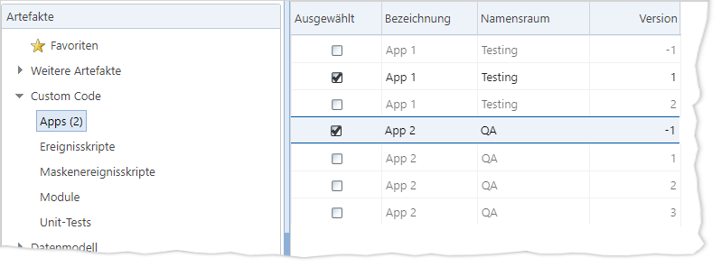

Folgende Gruppen und Artefakt-Typen können im
Artefaktpaket-Assistenten ausgewählt werden:
|
Gruppe |
Artefakt-Typen |
|
Weitere Artefakte |
 Abrechnungslayouts Abrechnungslayouts
Aktenstadien
Aktenstatus
Aktenvorgangsvorlagen (inkl.
Dokumentenvorlage, Auswahlaktion, Programmteil) [*12]
Ämter-Zahlungsmodi
Ämtertypen
Anspruchskonten [*9!]
Bearbeitungsstopp-Gründe
Dialog-Layouts [*1]
Druckerspooler
E-Banking-Belegarten
Einrichtungsstatus
EP-Verträge
Expertensystem-Experten
Expertensystem-Merkmale
Finanzkonten
Forderungsgründe
forderungsseitige
Verrechnungsreihenfolgen
Importformate
Importkonfigurationen |
Kalender [*16]
Kontaktverweisarten
Kontaktverweisgruppen
Kontaktvorgangsvorlagen (inkl.
Dokumentenvorlage, Auswahlaktion, Programmteil)
Konten in der Fibu-Software
Kontoverwendungsarten
Kostentabellen
Kostenverträge
Länderkennungen
Listenansichten [*1]
RVG-Faktoren [*3]
RVG-Ziffern [*3]
Teams [*16]
Unteraktentypen
Verrechnungsfolgen [*3][*15]
Vertragsgegenstände
Vorgangsvorlagenkategorien
Währungen [*10]
Wiedervorlage-Prioritäten |
|
Custom Code [*4], [*7] |
Apps [*5]
Ereignisskripte [*3], [*6]
Maskenereignisskripte |
Module [*1], [*5]
Unit-Tests [*5] |
|
Datenmodell [*18!] |
Datenbankobjekte (nur UDFs)
[*2] |
Datenbankskripte |
|
Datenschutz |
Bearbeitungskreise
Bearbeitungskreis-Gruppen
Erhebungsarten
Herkunftsarten
Löschkonzepte
Rechtsgrundlagen [*3!] |
Schuldnermerkmale [1]
Schuldnermerkmalsgruppen
Schutzwürdigkeiten
Zwecke [*3!] |
|
Workflow-Management [*11] |
Workflow-Aktualisierungs-Pakete
Workflow-Ausdrücke
Workflow-Kategorien |
Workflow-Verträge
Workflows |
|
Administration |
Allgemeine Übersetzungen [*13]
Auskunfteien [*14]
Corporate Designs [*17]
Ressourcen [*1] |
Rollen [*1]
Systemeinstellungen
Übersetzungen zu Artefakten
[*13] |
|
Dateien aus Dateisystem |
Auswählen von Dateien aus bestimmten Verzeichnissen des
IKAROS-Anwendungs-Servers, die unverändert in das Paket integriert werden.
[*8] |
|
Reports (MS Reporting Services) |
Auswahl von Reports vom
Reporting-Services-Server. |
[*1]
Ausgeblendete Standard-Einrichtungen
In diesen Artefakt-Typen sind nur Artefakte auswählbar, deren
Pflegeverantwortung nicht mehr komplett bei Ferber-Software liegt (d. h. ein
„Update durch FS“-Häkchen wurde entfernt bzw., bei Custom-Code-Modulen, der
Namensraum beginnt nicht mit „Fs.“).
[*2]
Transport von Artefakten, die UDFs enthalten
Beachten Sie, dass Artefakte, die UDFs
(benutzerdefinierte Datenbankfelder) enthalten, nicht transportiert werden
können, wenn die UDFs im Zielsystem noch nicht vorhanden sind. Um den Transport
zu gewährleisten, müssen Sie die UDFs daher zunächst einmalig in einem
separaten
Paket in das Zielsystem transportieren und anschließend den
Prozess des Anwendungs-Servers der Zielumgebung neu starten, damit die UDFs in
IKAROS bekannt sind. Erst anschließend können Sie Artefakte, die diese UDFs
voraussetzen, in das Zielsystem transportieren.
Einige Änderungen an Tabellen bzw. am
SQL-Datenmodell sind nur durch ein Löschen und Neuanlegen möglich, wofür dann z.
B. Dateninhalte, Schlüssel, Rechte, Indizes, Defaults und Constraints erst
gesichert und dann wieder hergestellt werden müssten.
Da dieses Verhalten von Seiten des TRMS nicht allgemeingültig
für alle erdenklichen Fälle generisch abgedeckt werden kann, können als
Datenbankobjekte nur „UDFs“ (also benutzerdefinierte Felder) direkt als
Artefakte ausgewählt werden. Für andere Datenbankobjekte (UDTs, Views, Functions
und Prozeduren) müssen Sie selbst geeignete SQL-Skripte erzeugen und diese
separat als Artefakte des Typs „Datenbankskripte“ hinzufügen.
Wenn ein UDF in ein IKAROS-System mit
Mehrfirmenbetrieb
transportiert wird, fügt das TRMS das UDF in allen
Geschäftseinheiten-Datenbanken dieses IKAROS-Systems hinzu.
[*3]
Nicht als Unterartefakte transportierte Artefakte
Diese Artefakt-Typen können in anderen Artefakte referenziert
sein, sie werden jedoch nicht (in allen Konstellationen) als Unterartefakte
transportiert.
Im Zweifelsfall sollten Sie Artefakte dieses Typs daher
entweder in Paketen immer explizit als Artefakte mit auswählen oder sie zunächst
einmalig in einem eigenen Paket ins Zielsystem transportieren (falls sie dort
nicht schon vorhanden sind).
Dies gilt derzeit für folgende Artefakt-Typen:
Datenschutz-Zwecke:
Zwecke können in folgenden Einrichtungen als individuelle Vorgabe für einen
abweichenden Datenschutz-Kontext zugeordnet sein können (Schaltfläche
„Datenschutz verwalten“ in den jeweiligen Stammdaten in IKAROS): Apps,
Ereignisskripte, Maskenereignisskripte, Aktenvorgangsvorlagen,
Kontaktvorgangsvorlagen und Workflows.
Das TRMS behandelt Zwecke grundsätzlich nie als Unterartefakte
und sie müssen daher immer explizit als Artefakte ausgewählt und transportiert
werden.
Custom-Code-Ereignisskripte:
Prinzipiell wird referenzierte Custom-Code-Programmierung (z. B. Auswahlaktion
und Programmteil in Vorgangsvorlagen) automatisch als Unterartefakt
transportiert. Ereignisskripte, auf die in Abrechnungslayouts,
Verrechnungsfolgen und EP-Vertragspositionen verwiesen wird,
werden jedoch nicht automatisch mit
transportiert (weil dort kein spezielles Skript referenziert wird, sondern ein
ganzer Skript-Stammbaum).
Ereignisskripte, die in Abrechnungslayouts, Verrechnungsfolgen
und EP-Vertragspositionen verwendet werden, müssen daher immer explizit als
Artefakte ausgewählt und transportiert werden.
RVG-Faktoren und
RVG-Ziffern: Die RVG-Stammdaten sind für die Gebührenberechnung
in IKAROS unerlässlich. Allerdings sind in anderen Datensätzen (z. B. Vorgängen)
nur die fertigen Berechnungsergebnisse gespeichert, jedoch kein Verweis auf die
RVG-Stammdaten. Daher können sie nicht als Unterartefakte, sondern
ausschließlich als eigenständige Artefakte transportiert werden.
ACHTUNG: Falls ein
Artefakt dieses Typs nicht im Zielsystem vorhanden sein sollte, werden die
anderen Artefakte bei einem Transport dennoch im Zielsystem angelegt. Diese
Artefakte sind jedoch eventuell nicht funktionsfähig oder verhalten sich anders,
solange die referenzierten Artefakte fehlen.
Tipp: Nutzen Sie
Transportkontrollskripte [Link], um die erforderlichen
Artefakte im Zielsystem zu prüfen und damit den Transport eventuell zu
verhindern.
Besonderheiten bei
Custom-Code-Artefakten
[*4] Von einem Custom-Code-Artefakt kann
immer nur entweder die Arbeitskopie oder eine der freigegebenen Versionen
transportiert werden:
- Die
eindeutige Auswahl wird technisch in der Liste sichergestellt: Sobald ein
Eintrag aus einem Stammbaum das „Ausgewählt“-Häkchen erhält, werden alle anderen
aus demselben Stammbaum ausgegraut und sind
nicht mehr wählbar. Damit die anderen Einträge des Stammbaums wieder wählbar
werden, müssen Sie das Häkchen entfernen.

Abb. 10: In der Auswahlliste für Custom-Code-Artefakte kann
nur ein Eintrag pro Stammbaum gewählt werden
- Wenn
Sie die Funktionalität „Gemäß Filter setzen“
ausführen, wird jeweils die höchste freigegebene Version (nicht die
Arbeitskopie) als „Ausgewählt“ markiert. Falls aus einem Stammbaum bereits ein
Eintrag gewählt ist, bleibt dieser unverändert.
[*5] In IKAROS basic/starter sind diese
Artefakt-Typen nicht verfügbar.
[*6] In IKAROS basic/starter werden nur
diejenigen Ereignisskripte angeboten, die in diesen Editionen auch bearbeitet
werden können.
[*7] Transport von freigegebenen Versionen
Freigegebene Versionen von Custom-Code-Artefakten werden auch
als freigegebene Versionen ins Zielsystem eingespielt; transportierte
Arbeitskopien hingegen bleiben auch im Zielsystem Arbeitskopien.
Beachten Sie hierbei Folgendes:
Das freigegebene Artefakt übernimmt
nicht die Versionsnummer aus dem Quellsystem, sondern erhält die nächsthöhere im
Zielsystem. Diese kann somit von der Versionsnummer im Quellsystem
abweichen.
Falls in dem Stammbaum eine Arbeitskopie
existiert, wird diese beim Einspielen einer freigegebenen Version gelöscht.
Automatischer Export/Transport
In den Transportvorgaben für Custom-Code-Artefakte [Link] können Sie festlegen, ob eingebundene
Custom-Code-Module („requiredModule()“ z. B. in Ereignisskripten) automatisch
mit exportiert/transportiert werden sollen. Im Standard geschieht dies
nicht.
[*8]
Dateien nach Transport für produktive Nutzung verschieben
Beachten Sie, dass die Artefakte des Typs „Dateien aus
Dateisystem“ nicht direkt in den produktiven Ordner der Zielumgebung
transportiert werden. Stattdessen legt das TRMS die Dateien in der Zielumgebung
in einem Unterordner mit dem Namen „TRMS“ ab (in der Zielumgebung im
„Dateiablageverzeichnis des Anwendungs-Servers“; gemäß der gleichnamigen
IKAROS-Systemeinstellung).
[*9]
Abrechnungssicht beim Transport von Anspruchskonten
In IKAROS gibt es die SQL-View
„BookingWithAccountsInColumns“, die in mehreren Standard-Abrechnungs-Views
verwendet wird. Wenn Sie mit dem TRMS Anspruchskonten transportieren, ergeben
sich dadurch wahrscheinlich für die Abrechnung relevante
Stammdatenänderungen.
Damit die Abrechnungen, die die genannte View verwenden, nach
dem Transport noch korrekte Ergebnisse liefern, müssen Sie diese View
aktualisieren. Verwenden Sie dazu nach dem Transport im IKAROS-Zielsystem unter
„Stammdaten/Konten/Anspruchskonten“) die Schaltfläche „Abrechnungssicht
erzeugen“.
Darüber hinaus sollten Sie prüfen, ob eventuell kundenspezifische
Views aufgrund des Transports im Zielsystem angepasst werden müssen.
[*10] Transport von
Währungen
Währungen können auch als Unterartefakt transportiert werden.
Dies geschieht automatisch im Zusammenhang mit den Artefakt-Typen „EP-Verträge“,
„Finanzkonten“, „Kostentabellen“ und „Kostenverträge“, wenn der Transport von
Unterartefakten angehakt ist und Währungen bei diesen Artefakten hinterlegt
sind.
Hinweis: Taggenaue Währungskurse (in IKAROS unter
„Stammdaten/Finanztabellen/Währungskurse“) können nicht per TRMS transportiert
werden. Währungskurse sind unabhängig von IKAROS und können jederzeit vom
Zielsystem für jeden beliebigen Zeitpunkt z. B. von externen Services abgefragt
werden.
[*11] Artefakte aus der Gruppe
„Workflow-Management“
Alle Artefakte der Typen „Workflows“,
„Workflow-Ausdrücke“ und „Workflow-Verträge“ werden jeweils als separates
wfu4-Paket exportiert bzw. transportiert; Workflow-Kategorien hingegen wie
sonstige Artefakte als XML-Datei.
Um sicherzustellen, dass alle
Workflow-Artefakte im Zielsystem in der korrekten Reihenfolge eingespielt
werden, können Sie diese explizit festlegen. Markieren Sie dazu in der
Baumansicht die Artefakt-Gruppe „Workflow-Management“, klicken Sie auf die
Schaltfläche „Reihenfolge“ und bringen Sie die Pakete im Dialog per
Drag&Drop in die gewünschte Reihenfolge.
Im Transportprotokoll werden bei
Workflow-Management-Artefakten keine detaillierten Meldungen festgehalten,
sondern nur eine Statusmeldung „Transport erfolgreich“ oder „Transport
fehlgeschlagen“. Das ausführliche Protokoll finden Sie im betreffenden
IKAROS-Zielsystem unter
„Stammdaten/Abläufe/Workflow-Management/Workflow-Aktualisierungen“.
[*12] Löschen von
PROSA-Word-Dokumenten in Vorgangsvorlagen
Falls Sie Vorgangsvorlagen bereits in einer früheren
IKAROS-Generation verwendet und auf Custom Code umgestellt haben, sind dazu in
der Datenbank eventuell noch die vorherigen PROSA-basierten
Word-Dokumentvorlagen gespeichert. Wenn Sie eine solche Vorgangsvorlage mit dem
TRMS transportieren, werden diese nicht mehr benötigten (und in IKAROS auch
nicht mehr zugreifbaren) Dokumente gezielt aus der Datenbank des
IKAROS-Zielsystems gelöscht. Das Transportprotokoll enthält in diesem Fall
entsprechende Einträge.
In IKAROS wird zwischen zwei Arten von kundenspezifisch
anpassbaren Übersetzungen unterschieden:
Artefakt-Typ „Allgemeine
Übersetzungen“: Die kundenspezifischen Übersetzungen aus dem
IKAROS-Menüpunkt [Administration ->
Übersetzungen]. Neben den anpassbaren Beschriftungen einiger
Standard-Dialogfelder könnten hier z. B. auch kundenspezifische Texte für
Meldungen verwaltet werden, die per Custom Code abgefragt werden können.
Artefakt-Typ „Übersetzungen zu
Artefakten“: Kundenspezifische Übersetzungen, die in
individuellen Artefakten hinterlegt sind, z. B. die Bezeichnung einer
Aktenvorgangsvorlage oder eines Workflows in mehreren Sprachen. Hier werden nur
Übersetzungen angezeigt, die Sie selbst in IKAROS angelegt haben. Hinweis: Diese
Übersetzungen werden typischerweise als Unterartefakte automatisch
mitttransportiert.
[*14]
Auskunftei-Schnittstellen
Das Paket für ein „Auskunfteien“-Artefakt enthält nicht
zwangsläufig alle Einrichtungen, die zum produktiven Einsatz der
Auskunftei-Schnittstelle erforderlich sind. Eventuell müssen Sie daher weitere
Artefakte separat transportieren oder im Zielsystem manuell erforderliche
Datensätze anlegen:
|
Fall |
Artefakte |
|
In Artefakt-Typ „Auskunfteien“ inklusive |
Die Konfiguration
der Schnittstelle (inkl. der Definition der Aktionen und Schritte).
Die Custom-Code-Module,
in denen die Logik der Aktionen und Schritte der Schnittstelle
programmiert ist.
Hinweise:
-
Durch Setzen der Transportvorgabe „Erforderliche Custom-Code-Module
beim Export einschließen.“ können Sie erreichen, dass auch innerhalb
dieser Module referenzierte weitere Module automatisch mit transportiert
werden. Dies ist im Zusammenhang mit den Auskunftei-Schnittstellen von
besonderem Interesse, um die speziell für kundenspezifische Anpassungen
vorgesehenen Module mit dem Namensraum „CreditAgency.[Schnittstellenname].Customizing“
automatisch zu transportieren.
-
Module, deren Namensraum mit „Fs.“ beginnt, werden nie
transportiert, weil es sich um unveränderliche Standard-Module handelt,
die in jedem IKAROS-System erwartet werden.
Systemeinstellungen,
deren Anwendungsnamensraum dem Kürzel der Auskunftei-Konfiguration
entspricht.
Die „Merkmalszuordnungen“
der Schnittstelle.
Speziell SCHUFA-Schnittstelle:
-
SCHUFA-Gläubigergruppen
-
SCHUFA-Merkmale |
|
Eventuell separat zu
transportieren |
Zusätzliche
Systemeinstellungen (falls von der Schnittstelle benötigt,
aber mit anderem Anwendungsnamensraum)
Akten- und Kontaktvorgangsvorlagen
Vorgangsvorlagenkategorien
Dateien aus
Dateisystem: Zertifikatsdateien (wie z. B. bei der
SCHUFA-Schnittstelle)
Custom-Code-Module:
Falls die Transportvorgabe „Erforderliche Custom-Code-Module beim Export
einschließen.“ für die Schnittstelle nicht angehakt
ist, müssen Sie alle Module, die nur indirekt per
„requiredModule()“-Funktion in der Programmierung der Schnittstelle
referenziert sind, separat als Artefakte auswählen und
transportieren. |
|
Eventuell manuell
anzulegen |
Herkunftskontakt
(falls wie bei den Standard-Schnittstellen eine Systemeinstellung für den
Kontakt der Datenschutz-Herkunft erforderlich
ist). |
[*15] Vorgangszuordnungen in
Verrechnungsfolgen
Beim Transport von Verrechnungsfolgen müssen Sie zwei Dinge
beachten:
Erstens, dass die in der
Verrechnungsfolge zugeordneten Aktenvorgangsvorlagen nicht automatisch als
Artefakte mit transportiert werden.
Zweitens, dass die
Vorgangsvorlagen-Zuordnungen nicht im Ganzen mit der Verrechnungsfolge
transportiert werden – sondern umgekehrt jede Aktenvorgangsvorlage individuell
ihre eigenen Zuordnungen transportiert.
Für die Praxis bedeutet dies: Wenn Sie eine Verrechnungsfolge
transportieren, sollten Sie diese Verrechnungsfolge nach dem Transport im
Zielsystem öffnen und die Vorgangszuordnungen prüfen.
Aufgrund der fachlichen Zusammenhänge zwischen Kalendern und
Referenzkalendern sowie Wiedervorlage-Teams gelten die folgenden
Besonderheiten:
Wenn der Kalender einen Referenzkalender hat,
muss dieser Referenzkalender schon im Zielsystem vorhanden sein oder als eigenes
Artefakt im selben TRMS-Paket mit transportiert werden.
Die Sachbearbeiter, die
einem Kalender zugeordnet sind, sind die einzigen „Unterartefakte“ von Kalendern
und können optional mit transportiert werden. In den Transportvorgaben ist das
Kontrollkästchen „Die Sachbearbeiter, die zum Kalender zugewiesen sind, beim
Export einschließen.“ standardmäßig angehakt.
Die Transportvorgabe „Artefakt beim Import überschreiben,
wenn schon vorhanden.“ hat zwei mögliche Ergebnisse:
- Häkchen
gesetzt: Der vorhandene Kalender im Zielsystem wird komplett gelöscht (inkl.
aller Nichtarbeitstage und Sachbearbeiter-Zuordnungen) und der Kalender aus dem
TRMS-Paket wird eingespielt.
- Kein
Häkchen: Der vorhandene Kalender bleibt komplett unverändert. Es werden also
auch keine Nichtarbeitstage oder zugeordnete Sachbearbeiter
entfernt/vervollständigt.
Wenn es im Quellsystem Teams gibt, die dem
Kalender zugeordnet sind, aber im Zielsystem fehlen, wird der Kalender dennoch
transportiert. Im Transportprotokoll finden Sie dann entsprechende Hinweise,
dass Sie diese Zuordnungen im Zielsystem (bei Bedarf) manuell nachtragen müssen,
wenn die Teams im Zielsystem angelegt wurden. Sie können dies vermeiden, indem
Sie zusammengehörige Teams und Kalender als separate
Artefakte im selben TRMS-Paket
transportieren.
Transport von Teams mit Kalenderzuordnung
Falls ein Team mit einer Kalenderzuordnung transportiert
wird, aber der Kalender im Zielsystem nicht vorhanden ist, wird das Team dennoch
transportiert. Die Zuordnung im Zielsystem muss (bei Bedarf) manuell erfolgen,
sobald der Kalender im System vorhanden ist. Im Transportprotokoll finden Sie
einen entsprechenden Hinweis. Sie können dies vermeiden, indem Sie
zusammengehörige Teams und Kalender als separate
Artefakte im selben TRMS-Paket
transportieren.
Für den Transport der Corporate Designs gelten die folgenden
Besonderheiten:
Es werden sowohl Corporate Designs als
auch Unter-Corporate-Designs zum Transport angeboten. Wenn
Unter-Corporate-Designs transportiert werden, werden automatisch die
übergeordneten Corporate Designs mittransportiert.
Ein Corporate Design kann nur mitsamt
aller
Elemente transportiert werden.
Lediglich Unter-Corporate-Designs können
beim Transport eines Corporate Designs ausgeschlossen werden. Im Gegensatz zu
anderen Artefakten ist der Standardfall bei diesem Transport, dass die
Unter-Corporate-Designs nicht
mittransportiert werden, wenn dies nicht ausdrücklich in den
Transportvorgaben festgelegt wird.
[*18] SQL-„Datenmodell“-Transporte
und Mehrfirmenbetrieb
Achtung: Wenn Sie
IKAROS mit aktivem Mehrfirmenbetrieb einsetzen, beachten Sie bei Transporten aus
der Artefakt-Gruppe „Datenmodell“ („Datenbankobjekte“, „Datenbankskripte“)
unbedingt
Folgendes:
Das TRMS führt die Datenmodelländerungen immer in allen
Geschäftseinheiten der IKAROS-Zielumgebung durch (egal, welche
Geschäftseinheit konkret in den „IKAROS-System“-Stammdaten hinterlegt ist). Dies
ist notwendig, damit die Datenbanken aller Geschäftseinheiten strukturell gleich
bleiben, weil dies für den Mehrfirmenbetrieb erforderlich ist.
Achten Sie daher unbedingt darauf,
dass Artefakte des Typs „Datenbankskript“ tatsächlich dafür geeignet sind, in
allen Geschäftseinheiten ausgeführt zu werden. Dies gilt
insbesondere dann, wenn Sie nicht nur übergreifende SQL-Objekte (UDTs, Views,
usw.) transportieren, sondern – wovon aber generell abzuraten ist! – per Skript
auch Änderungen innerhalb von vorhandenen Datenbeständen durchführen. Sollten
Sie in Skripten Änderungen an Dateninhalten nur einer Geschäftseinheit vornehmen
wollen, müssen Sie Ihre Skripte entsprechend gestalten, z. B. im Skript den
konkreten Namen der Datenbank mit berücksichtigen.